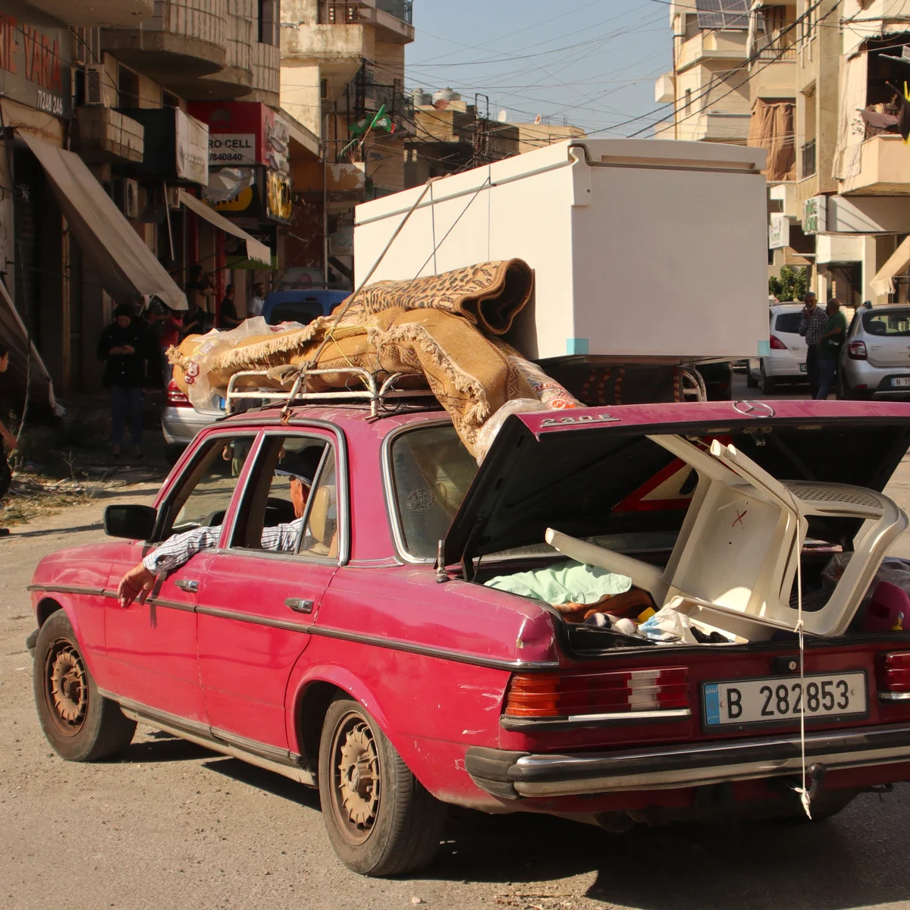

VOL. CLXXIII . ... No. 60,259
© 2024 The New York Times Company
TUESDAY, AUGUST 27, 2024
Prices in Canada may be higher
$4.00
Respite Is Far
From a Truce
In the Mideast
Wars With Neighbors
Have No End in Sight
By PATRICK KINGSLEY
JERUSALEM — After weeks
of foreboding, an all-out war
between Israel and Hezbollah
has been averted, at least for
now, as both sides returned on
Monday to more contained con-
frontations along the Israel-
Lebanon border.
But any relief has been tem-
pered by renewed anxiety and
uncertainty: Despite the appar-
ent postponement of a bigger
regional war, Israel’s grinding
conflicts with both Hezbollah in
Lebanon and Hamas in Gaza still
have no end in sight.
The trajectories of both wars
depend largely on Prime Min-
ister Benjamin Netanyahu of
Israel and Yahya Sinwar of Ha-
mas, who both fear for their own
political survival should they
agree to a cease-fire in Gaza on
terms that they or their support-
ers deem unfavorable.
In negotiations for a truce in
Gaza, Mr. Netanyahu is pushing
for a temporary break in hostil-
ities that will theoretically allow
Israel to continue to fight Hamas
after a few weeks, thus placating
his supporters who oppose end-
ing the war before Hamas is
completely destroyed. By con-
trast, Mr. Sinwar wants a perma-
nent cease-fire that, even if it
collapses in a few months, will
give Hamas a greater chance of
rebuilding its arsenal and retain-
ing power in Gaza
Without a deal in Gaza,
Hezbollah has vowed to continue
its strikes along the Israel-Leba-
non border, where any sudden
miscalculation or mistake still
risks transforming a relatively
restricted fight into a bigger
conflict involving Iran, the bene-
factor of both Hamas and
Hezbollah
Thus far at least, finding a way
to satisfy both men has seemed
nearly impossible.
For now, both Israel and
Continued on Page A8
RABIH DAHER/AFP — GETTY IMAGES
A family leaving home in
southern Lebanon on Monday
ROMAN PILIPEY/AGENCE FRANCE-PRESSE — GETTY IMAGES
Sheltering at a Kyiv metro station during a Russian airstrike Monday. Along with the capital, attacks hit the west and the southeast.
1 Million Cheat
Bus Fare Daily,
Foiling M.T.A.
By ANA LEY
Wounded Troops Find a Home, and Vie for Gold
Every weekday in New York
City, close to one million bus riders
— roughly one out of every two
passengers — board without pay-
ing. The skipped fares are a cru-
cial and growing loss of revenue
for the Metropolitan Transporta-
tion Authority, which is under se-
vere financial pressure
New York’s long-running fare
evasion problem, among the
worst of any major city in the
world, has intensified recently;
before the pandemic, only about
one in
Yet public officials have done
relatively little to collect the lost
revenue from bus riders. Instead,
they have focused almost exclu-
sively on the subway system,
where waves of police officers and
private security guards have been
deployed to enforce
ORLANDO, Fla. — Master Sgt.
Ivan Morera isn’t used to being in
last place. He’s a Green Beret. A
relentless competitor. But at the
2024 Warrior Games, with his
prosthetic hand hooked into a
rowing machine, he was trailing
the pack.
So he focused on increasing the
rhythm of each pull: legs, body,
arms. Arms, body, legs. When the
buzzer sounded, he had passed
everyone to win gold. “I do it to
show my kids that everything and
anything is possible,” said
Sergeant Morera, who lost his
left
arm in a 2013 convoy accident in
Afghanistan.
Hundreds of wounded or dis-
abled troops competed alongside
him at the U.S. military’s Warrior
Games in Orlando, Fla., this sum-
mer, in events including archery,
swimming, seated volleyball and
wheelchair rugby.
Since the annual competition
was created in 2010, the Games
have given the Defense Depart-
ment a new way to support and re-
habilitate a select group of
wounded troops, helping them re-
main in the service and on duty.
The event has also become an im-
portant symbol of the changing
perceptions about who is fit to
serve.
Facing a significant personnel
crisis as they struggle to recruit
and retain service members — a
deficit on pace to be worse than
any since just after the Vietnam
War — some branches have be-
gun to let more troops with dis-
abilities remain on duty. Military
recruiters are also accepting more
people with asthma, attention
deficit hyperactivity disorder and
other previously disqualifying
conditions.
The Warrior Games were de-
signed to give some of those
wounded service members a
chance to be part of a team and
work toward common goals, said
David Paschal, assistant deputy
chief of staff with the Army’s
Training and Doctrine Command,
which oversees the branch’s re-
cruiting efforts. “I think those two
things are critical to supporting
the recovery of our athletes.”
Continued on Page A14
ENERGY GRID DAMAGED
200 Missiles and Drones
Called ‘One of the
Largest’ Strikes
By ANDREW E. KRAMER
and MATTHEW MPOKE BIGG
KYIV, Ukraine — Moscow
launched more than 200 missiles
and drones across a wide swath of
Ukraine on Monday, damaging
energy facilities and sending resi-
dents of Kyiv into basements and
subways to seek shelter. Presi-
dent Volodymyr Zelensky con-
demned the assault as “one of the
largest strikes” of the 30-month
war
The strikes occurred against
the backdrop of Ukraine’s incur-
sion into southern Russia — the
first invasion on Russian soil since
World War II. On Monday,
Ukraine’s forces continued to try
to advance in the region.
The offensive into the Kursk re-
gion has shifted the dynamics of
the war after months in which
Kyiv’s forces were on the defen-
sive in Ukraine’s east. The push
has slowed in recent days, but Mr.
Zelensky said on Sunday that
Ukrainian forces had advanced by
one to three kilometers and taken
control of two more settlements. It
was not possible to verify the
claim independently.
At the same time, Russian
troops have been attacking relent-
lessly along the front line inside
Ukraine, closing in on a key city,
Pokrovsk, and razing towns and
villages with artillery barrages
and glide bombs
The drone and missile attacks
on Monday, which began around
dawn, targeted energy infrastruc-
ture in the capital, Kyiv, and in the
regions of Lviv and Rivne in the
west and Zaporizhzhia in the
southeast, the authorities said.
The strikes appeared to be an
escalation of a Russian campaign
against Ukraine’s power grid and
inflicted damage significant
enough to cause blackouts in Kyiv
and other cities
”Like most previous Russian
strikes, this one is just as vile, tar-
geting critical civilian infrastruc-
ture,” Mr. Zelensky said in a post
on the Telegram messaging app.
“There is a lot of damage in the en-
ergy sector,” he said, adding that
crews were repairing the damage.
Russia has repeatedly targeted
Ukrainian energy infrastructure
in attempts to damage the econ-
omy and compound civilian mi-
sery caused by the war